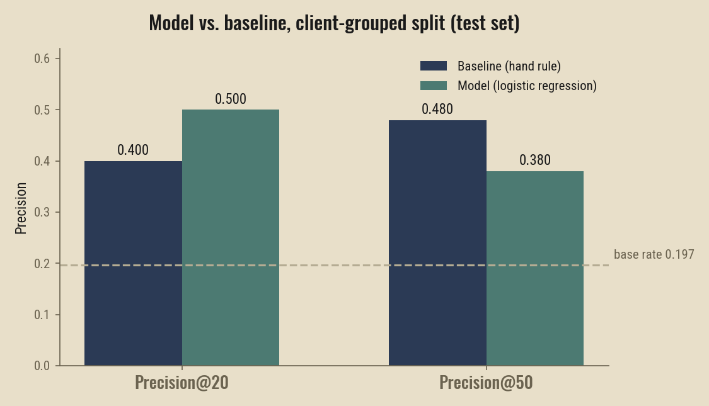
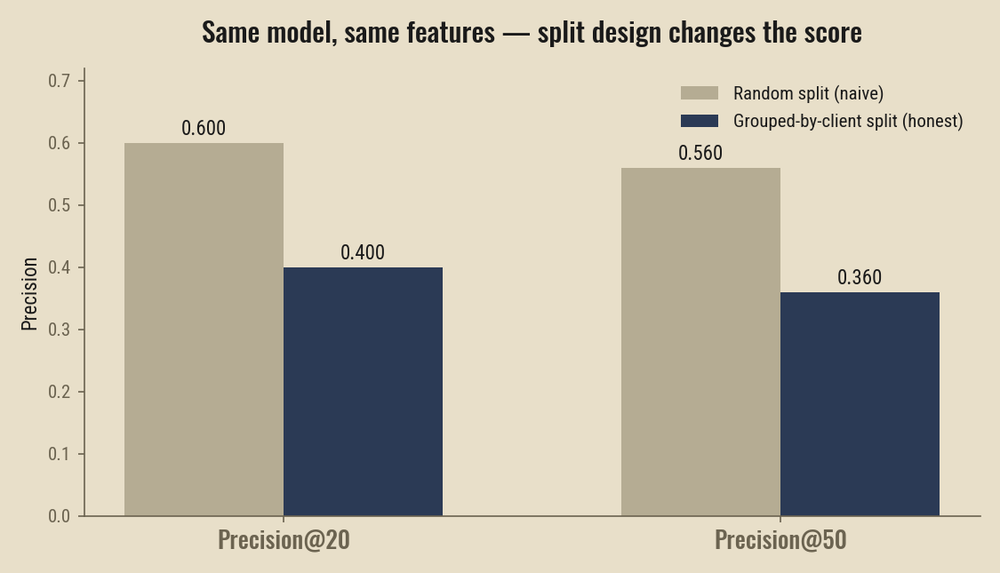

Does a Learned Model Beat a Hand-Written Rule at Flagging Declining Content?
Abstract
Can a simple, hand-written rule that flags pages likely to lose search traffic be beaten by a learned model — and does the answer depend on how carefully the model is validated? Using FlyRank's internship data warehouse, a real production release covering roughly 17 months of search and analytics performance across dozens of clients, March 2026 page-level features were used to predict whether a page's clicks would drop 20%+ by April 2026, and compared against a hand-written staleness-and-CTR rule. A logistic regression model was trained and evaluated with a client-grouped train/test split, so that no client's pages appeared in both sides, to avoid the model simply memorizing individual clients. The model outperformed the baseline rule at precision@20 (0.500 vs. 0.400) but underperformed it at precision@50 (0.380 vs. 0.480), a crossover that held after fixing a real timing-leakage bug caught mid-analysis. A follow-up audit found that this same model's reported precision is sensitive to split design: a naive random split produced meaningfully higher, likely optimistic numbers on the identical data. This is decision-support evidence for where a content team might look first, not a validated production system — read alongside the Limitations section before acting on it.
Introduction / Problem
A content team managing thousands of pages across dozens of clients can't manually check every page every month for signs it's losing search traffic. Someone has to decide which pages get a human look first. The obvious approach is a simple rule: flag pages that are old and getting weak clicks. That rule is fast to write and easy to explain — but does it actually work, and does a learned model genuinely do better, or does it just look better because of how it was tested?
This paper answers both questions on real data: whether a logistic regression model beats a hand-written baseline rule at ranking pages by decline risk, and whether that comparison holds up once the model is checked the way a skeptical reviewer would check it — a grouped validation split, a leakage audit, and an honest account of what changed between runs.
Data
Source: FlyRank/internship-warehouse, a real production data release (build v20260703) covering roughly 17 months of search and content performance, from 2025-01-27 to 2026-06-30, across 104 pseudonymized clients and roughly 520,000 content items. The main fact table used here, fact_content_daily_performance, holds about 78.8 million rows at the grain of one report-date × client × content item.
This analysis used two real, adjacent months from that release: March 2026 as the feature window (what's knowable at the decision moment) and April 2026 as the outcome window (what actually happened next). Both months are fully populated, non-final months of the release — the final month is deliberately excluded from any label logic, since it can't have a genuine future outcome to compare against.
Rows without usable Search Console data (gsc_data_available is FALSE) were excluded — this is a real property of the warehouse, not an arbitrary filter: a meaningful share of clients have incomplete or not-yet-started tracking history for parts of the panel, and treating a missing measurement as a real zero would distort every downstream number. No client names, raw queries, or any other private identifying detail appear in this paper or its notebooks; all client and content identifiers are the warehouse's own pseudonymized hashes.
Methodology
Label
A page is labeled declining if its April clicks fell below 80% of its March clicks (a 20%+ drop). A flat "any decrease" threshold was avoided on purpose — ordinary month-to-month noise would label far too many pages as declining for no real reason. Pages that vanished from the April data entirely were treated as 0 April clicks, the strongest form of decline. On this definition, the base rate is 23.7% of pages labeled declining across the full March panel.
Features
Four features, all aggregated from March only — strictly before the outcome window used to build the label: total March impressions, total March clicks, average March search ranking position, and days since the page's content was last updated (with unresolvable or future-dated update timestamps treated as unknown, not as "recently updated" — see the leakage note below).
Baseline
The hand-written baseline scores a page highest if it is stale (180+ days since its last real update), visible (real March impressions), and underperforming its click-through rate for its ranking position (below roughly half the position-appropriate benchmark CTR). Each scored page carries one reason code explaining why it was flagged.
Validation design
The primary split groups all of a client's pages entirely into either train or test — never both — using a 70/30 split by client (32 train clients, 15 test clients from 47 total). This matters because rows from the same client share hidden structure; a random row-level split lets a model partly memorize which specific clients tend to decline, inflating its apparent skill on data it has effectively already seen.
Leakage checks
Two leaks were actively hunted, per the internship's own leakage-audit process:
- A real timing leak, caught and fixed. The content-update timestamp used to compute staleness sometimes fell after the March reporting date — a future-dated update leaking into a feature that should only reflect the past. This was caught during error review (the model's three most confident wrong predictions all shared this exact anomaly), fixed by treating those cases as "staleness unknown" rather than a real value, and the full comparison was rerun.
- A deliberate leak test. A feature computed directly from the training label (
client_decline_rate, each client's average decline rate in the training split) was added on purpose to confirm the test harness would react. It raised precision@20 only modestly (0.400 → 0.450) rather than toward a near-perfect score — because the grouped split means test clients never appear in training, this specific leak mostly collapses to a constant value on the test set, structurally blunting its own effect. This is discussed further in Limitations.
A train-without-suspect check was also run on the top-magnitude feature, march_clicks: removing it dropped precision@20 from 0.400 to 0.350 — a small, proportionate decline consistent with losing one honest signal, not the sharp collapse toward a real score that would indicate label leakage.
Results
All numbers below are computed on the same held-out test set (client-grouped, 30% of clients, unseen during training), at the same two cutoffs, next to the same base rate.

Both methods clear the base rate comfortably at both cutoffs. The model leads at precision@20; the baseline leads at precision@50.
| Precision@20 | Precision@50 | |
|---|---|---|
| Baseline (hand rule) | 0.400 | 0.480 |
| Model (logistic regression) | 0.500 | 0.380 |
| Base rate | 0.197 | 0.197 |
The model is stronger among its most confident picks; the baseline stays more consistently useful across a wider list. This crossover held after the timing-leak fix — the fix shifted both numbers but did not change which method wins at which cutoff.
Split sensitivity
A follow-up audit re-ran the identical model and features under a naive random row split instead of the grouped split, to check how much the validation design itself was shaping the reported score.

Same model, same four features — only the split changed. The random split reports meaningfully higher precision at both cutoffs.
| Precision@20 | Precision@50 | |
|---|---|---|
| Random split (naive) | 0.600 | 0.560 |
| Grouped-by-client split (honest) | 0.400 | 0.360 |
The gap is the finding: a random split reports a meaningfully rosier picture of the same model on the same data. This is consistent with the model partly benefiting from seeing a given client's pages during training and being tested on other pages from that same client — exactly the memorization risk the grouped split is designed to prevent.
Error analysis
The model's coefficients show no single feature dominating (largest: march_clicks at 0.0052; smallest: days_since_update at effectively zero once the timing leak was fixed) — a diffuse, unremarkable set of weights, not the lopsided "one feature explains everything" pattern that would suggest a leak.
The model's three most confident wrong predictions (each scored close to 1.0 probability of decline, but the page did not actually decline) all shared two traits: strong March performance (good ranking position, real click volume) and unresolvable staleness data. A plausible reading, not a confirmed one: pages doing well in March simply have more room to fall 20%+ by April than pages already struggling, so part of what the model is learning may be an ordinary regression-to-the-mean pattern rather than a decline signal specific to those pages. Testing this properly would need multiple months of history per page, which the current single-month feature set does not provide.
Limitations & Honest Framing
- One month, one label definition. The 20%-drop-in-30-days label is one reasonable choice, not the only valid one. A different threshold or window could change which pages get flagged and possibly which method wins at which cutoff.
- Result is directional, not a guarantee. The model's precision@20 win and the baseline's precision@50 win are observed on one client-grouped 70/30 split, on one pair of months. They are not validated to hold on other months, other client mixes, or repeated resampling.
- A genuine run-to-run reproducibility gap was found. Re-running the identical grouped-split procedure in a later audit produced different precision numbers under the same model and same random seed (0.500/0.380 in the original run vs. 0.400/0.360 in the audit's re-run of the same grouped design). The most likely cause: the underlying SQL aggregation has no explicit row ordering, so which specific clients land in "train" vs. "test" can differ between runs even with a fixed seed on the split step itself. This is reported honestly as an open reproducibility issue, not smoothed over — a reader should treat the exact precision values as approximate, not exact, until the aggregation query is made order-stable.
- The deliberate-leak test likely understates how badly a real leak could hurt this setup. Because the grouped split structurally blunts a client-level leaked feature (it collapses toward a constant for unseen test clients), this particular verification method is weaker evidence than the leakage skill's own guidance expects ("a jump toward 1.0"). A leak that operated at the content level rather than the client level might not be caught by this same check.
- This is decision support, not an automated action system. Nothing here recommends removing a human from the loop — both the baseline and the model are ranking tools to help a person decide where to look first, not a system that should independently take action on a page.
Ranked Recommendations
- Use the model to prioritize the first look; use the baseline as a second pass. The model's precision@20 advantage suggests it's better at surfacing the highest-confidence cases first. The baseline's precision@50 advantage suggests it stays more reliable further down a list — combining both as first-pass and backstop is better supported by the evidence here than trusting either alone.
- Fix the split's reproducibility gap before reporting any single precision number as final. Add an explicit, stable ordering to the March aggregation query so the same seed reliably produces the same train/test client assignment.
- Treat "staleness unknown" as its own category in any dashboard or report, not as "fresh." The timing-leak fix showed this distinction changes real numbers; collapsing it back to a default would silently reintroduce the same class of error.
- Extend the label to multiple months before trusting the regression-to-the-mean hypothesis. The current single-month design can't distinguish genuine decline risk from ordinary reversion for high performers — a longer window per page is the natural next step.
Reproducibility
All code, real notebook outputs, and this paper's source live in the public repository below. Every number in this paper was pulled directly from executed notebook cells, not recomputed or approximated for the write-up.
- Repository: github.com/Ahil-Adnan/FlyRank-Machine-Learning
- Model + baseline comparison:
work/notebooks/w05_model.ipynb - Validation audit, split-sensitivity check, leakage tests:
work/notebooks/w06_validation_audit.ipynb - Random seed:
42, fixed throughout (see Limitations for the one known exception to exact reproducibility) - Data access: huggingface.co/datasets/FlyRank/internship-warehouse (gated, free instant-approval access)
Acknowledgments & Data Credit
Built on the FlyRank ML Internship dataset. Learn more at flyrank.ai.